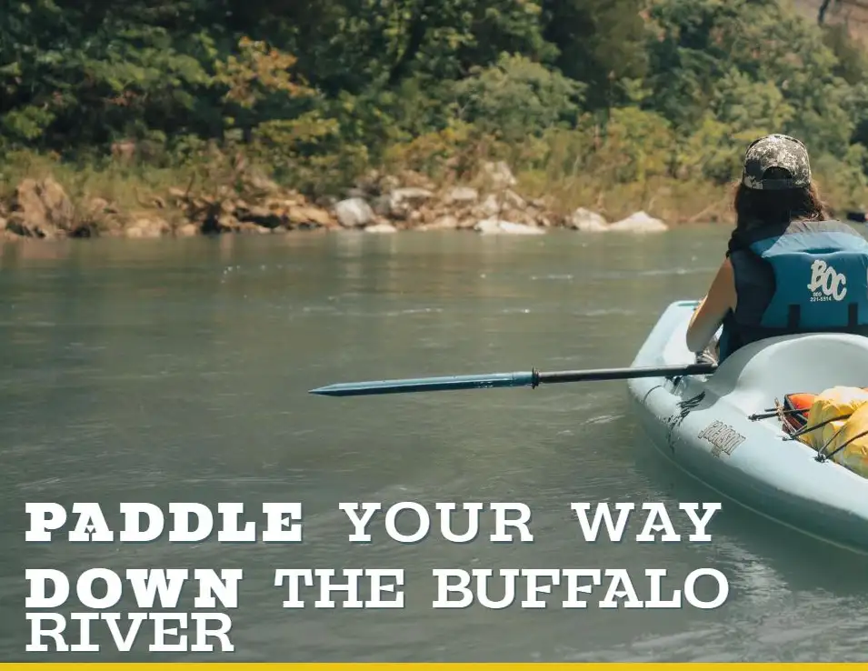

BUFFALO RIVER ADVENTURERS 2022
A static website collaboration for a fictional organization, Buffalo River Adventurers. Designed to inspire outdoor enthusiasts to explore the Buffalo National River. A project of IFSC 3650: Guided Applications in IT.
- My Role
- As the project manager, I was responsible for managing all project tasks, scheduling, and communication regarding our project. Later, my primary responsibility became mobile css development.
